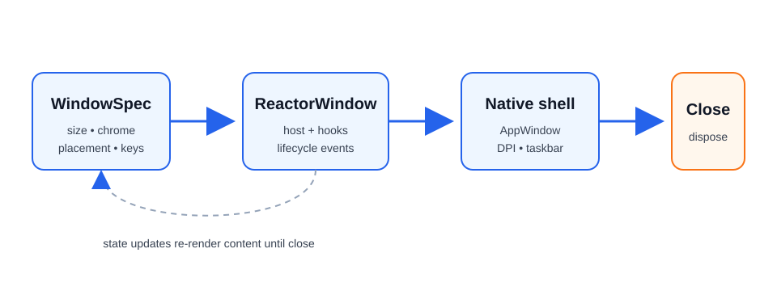

WinUI reference: For the full property surface and design guidance, see Windowing Overview.
Windows¶
Most Microsoft.UI.Reactor (Reactor) apps start with the single window created by
ReactorApp.Run. Larger desktop apps can open multiple native WinUI top-level
windows with WindowSpec and ReactorApp.OpenWindow, while keeping the same
declarative component model used inside a page.

Lifecycle basics¶
ReactorApp.Run<TRoot>(...) opens the primary window. Pass a WindowSpec instead
of the individual arguments when the primary window needs the full declarative
surface — icon, min/max size, backdrop, corner style, or placement persistence.
ReactorApp.OpenWindow opens a secondary window from the UI thread and returns a
ReactorWindow handle for imperative lifecycle operations.
public static void OpenSettings()
{
var settings = ReactorApp.OpenWindow(
new WindowSpec { Title = "Settings", Width = 520, Height = 420 },
() => new SettingsWindow());
settings.Activate();
settings.Close();
}
Caveats:
Close,Show,Hide,Activate,Update, and mutators are UI-thread only.Close()is idempotent: calling it more than once (or while an owner-close cascade is already tearing the window down) performs the native close exactly once. A redundant close is a safe no-op, so converging teardown paths can't re-enter native window destruction.ReactorApp.PrimaryWindowis the first eligible opened window; shutdown policy decides whether closing it exits the process. Auxiliary windows that opt out of the shutdown policy — notably docking tear-off floating windows — are excluded from primary election: they can never become the fallback primary, and they are never promoted to primary when the real primary closes (re-election skips them, leavingPrimaryWindownullif only excluded windows remain). This keeps closing a transient floating window from firingOnPrimaryWindowClosedand exiting the app.UseWindow()returns the owningReactorWindowinside a window component andnulloutside one (for example tray flyouts).
Sizing & resizing¶
Initial Width / Height are DIPs, and both are optional — leave them unset
(the default) to let the OS choose the initial window size, exactly as a plain
XAML Window does. Setting only one axis applies that axis and leaves the other
to the OS. Runtime size is controlled by SetSize,
chrome resize policy by ResizeMode, interactive aspect locks by AspectRatio,
and content-driven sizing by SizeToContent.
class PreviewWindow : Component
{
public static WindowSpec Spec => new()
{
Title = "Preview",
Width = 640,
Height = 360,
ResizeMode = WindowResizeMode.CanMinimize,
AspectRatio = 16.0 / 9.0,
};
public override Element Render()
{
var window = UseWindow();
UseWindowAspectRatio(1.0); // lifetime-bound hook; unmount clears it
return Button("Widescreen", () => window?.SetAspectRatio(4.0 / 3.0));
}
}
| API | Values / behavior |
|---|---|
ResizeMode |
CanResize, NoResize, CanMinimize |
AspectRatio |
double? width / height; honored during drag resize |
SizeToContent |
Manual, Width, Height, WidthAndHeight |
Caveats:
AspectRatiorejectsResizeMode.NoResize; no drag means no constraint to apply.AspectRatioandSizeToContentare mutually exclusive layout drivers.SizeToContentruns after layout, so the first frame can briefly use the initialWidth/Height(or the OS-chosen size when they are unset); maximized windows ignore it and log a warning.- Min/max fields (
MinWidth,MaxHeight, etc.) win over content and aspect sizing.
Movement & placement¶
Use StartPosition for initial placement, SetPosition for imperative moves,
Position for read-back, and PositionChanged / UseWindowPosition() to react
to live moves.
class CommandPalette : Component
{
public static WindowSpec Spec => new()
{
Title = "Command Palette",
StartPosition = WindowStartPosition.CenterOnCurrent,
IsMovableByBackground = true,
};
public override Element Render()
{
var (x, y) = UseWindowPosition();
var drag = UseWindowDragMove();
return VStack(8,
TextBlock($"at {x}, {y}"),
Button("Drag window", drag));
}
}
IsMovableByBackground starts the OS move loop when a non-interactive part of
the root is pressed. Mark custom interactive regions with .Drag(false):
class PaletteChrome : Component
{
public override Element Render() =>
HStack(
TextBlock("Palette"),
Button("Settings").Drag(false));
}
Placement options:
WindowStartPosition |
Meaning |
|---|---|
Default |
WinUI / shell chooses placement |
CenterOnPrimary |
Center on primary monitor |
CenterOnOwner |
Center on the owner window's monitor |
CenterOnCurrent |
Center on the cursor monitor |
Manual |
Use ManualPosition DIP top-left |
Persistence is opt-in and explicit:
public static WindowSpec ShellSpec { get; } =
new WindowSpec { Title = "Shell" }
.WithPersistence("main-window", fallback: WindowStartPosition.CenterOnCurrent);
public static void FlushPlacement(ReactorWindow window)
{
window.SavePlacement(); // manual best-effort flush
}
Caveats:
- Position values are DIPs; mixed-DPI desktops have no single global DIP grid.
PositionChangedfires eagerly during drags; debounce in app code if needed.PersistenceIdalone is only identity. Placement restore/save requiresPersistPlacement = trueor.WithPersistence(...).
Z-order & visibility¶
WindowLevel selects a z-order tier. ShowInTaskbar and ShowInSwitcher are
separate because the taskbar button and Alt-Tab visibility are separate shell
concepts.
class FloatingPalette : Component
{
public static WindowSpec Spec => new()
{
Title = "Palette",
Level = WindowLevel.Floating,
ShowInTaskbar = false,
ShowInSwitcher = true,
};
public override Element Render()
{
var isCovered = UseIsCovered(); // hint from ZOrderChanged
return TextBlock(isCovered ? "(covered)" : "(visible)");
}
}
WindowLevel |
Behavior |
|---|---|
Normal |
Regular z-order |
Floating |
Stays above owner and other Reactor app windows as they activate |
AlwaysOnTop |
Win32 topmost tier |
ShowInTaskbar |
ShowInSwitcher |
Result |
|---|---|---|
true |
true |
Normal app window |
true |
false |
Taskbar button, no Alt-Tab entry |
false |
true |
Tool palette shape |
false |
false |
Transient / launcher / overlay shape |
Caveats:
ZOrderChanged.IsCoveredis a covered hint based on HWND insertion order, not pixel-accurate occlusion.Floatingis app-local. UseAlwaysOnToponly when you need global topmost.- Runtime taskbar visibility flips hide/show the HWND once so the shell refreshes.
Chrome & appearance¶
WindowStyle controls native chrome. WindowCornerStyle maps to the Windows 11
DWM corner preference. Backdrops are applied either on WindowSpec.Backdrop or
with a root .Backdrop(...) modifier.
public static WindowSpec HudSpec { get; } = new()
{
Title = "HUD",
Style = WindowStyle.None,
IsMovableByBackground = true,
CornerStyle = WindowCornerStyle.Rounded,
Backdrop = BackdropChoice.Of(BackdropKind.DesktopAcrylic),
};
| API | Values |
|---|---|
WindowStyle |
Default, None, ToolWindow |
WindowCornerStyle |
Default, Square, Rounded, RoundedSmall |
BackdropKind |
None, Mica, MicaAlt, DesktopAcrylic, AcrylicThin, Transparent |
TitleBar(...) is the declarative custom title bar. When WindowSpec.ExtendsContentIntoTitleBar
is null (the default), mounting a TitleBar(...) element automatically sets
Window.ExtendsContentIntoTitleBar = true. Explicit true or false on the
spec wins over inference.
class TitleBarWindow : Component
{
public override Element Render() =>
VStack(
TitleBar("My app"),
TextBlock("Body"));
}
TitleBar(...) accepts custom Content (and a trailing RightHeader). Interactive
controls inside the content are excluded from the window drag region automatically
(WinApp SDK ≥ 2.1.3). Override per element with .IsDragRegion(false) to force a
visual clickable or .IsDragRegion(true) to force it draggable, and set
.AutoRefreshDragRegions() on the title bar when the content changes across renders:
(TitleBar("Gallery") with
{
Content = HStack(8,
AutoSuggestBox("", _ => {})
.AutomationName("Search gallery")
.Width(200),
Button(Icon(FontIcon("\uE713", fontSize: 16)), OnSettings)
.AutomationName("Settings").IsDragRegion(false)),
}).AutoRefreshDragRegions();
Title bar icon¶
A TitleBar(...) with no .Icon(...) shows the window's icon: WindowSpec.Icon
if one was declared, otherwise the Assets\AppIcon.ico convention. An app that
already ships an icon does not restate it:
// A TitleBar(...) with no .Icon(...) inherits the window's icon, so an app that
// already ships one does not restate it.
static class TitleBarIconSetup
{
public static void Run() =>
ReactorApp.Run<InheritedIconApp>("My app",
icon: WindowIcon.FromPath("Assets/AppIcon.ico"));
}
class InheritedIconApp : Component
{
public override Element Render() =>
VStack(
TitleBar("My app"), // shows Assets/AppIcon.ico, nothing to declare
TextBlock("Body"));
}
// Opt out where a bare title bar is what you want:
class BareTitleBarApp : Component
{
public override Element Render() =>
VStack(
TitleBar("My app").NoIcon(),
TextBlock("Body"));
}
The WinUI control does not do this itself. Two limits are worth knowing:
- An icon that exists only as an executable PE resource (
<ApplicationIcon>) is not inherited. That stage of the window's own icon chain yields a rawHICONwith no path, and a XAMLIconSourceneeds an image source. The window caption and Alt-Tab still show it; the in-window title bar does not. - An embedded window (
WindowSpec.Embed) never receives a window icon, so its title bar has none to inherit.
.Icon(...) still wins where you want a different mark — a monochrome glyph in the
title bar against a full-colour .ico in the caption, say. .NoIcon() is the
opt-out for a deliberately bare title bar on an app that ships an icon.
Behaviour change. Before this, a
TitleBar(...)without.Icon(...)always rendered no icon. An existing app that ships a window icon — or anAssets\AppIcon.ico— and deliberately wanted a bare title bar should add.NoIcon()to keep that. Apps that set.Icon(...)explicitly are unaffected.
Tall title bar¶
A title bar that hosts navigation chrome — a back button, a pane toggle — uses the
tall (48 DIP) caption. .Tall() declares it:
var titleBar = TitleBar("My app")
.WithNavigation(nav)
.PaneToggleButtonVisible(true)
.Tall(); // or .HeightOption(WindowTitleBarHeight.Tall)
This sets both halves, which is the part that is easy to get wrong by hand: the
system caption (AppWindow.TitleBar.PreferredHeightOption) and the WinUI title-bar
control's own height. The control does not derive its height from the caption, so
raising only the caption leaves a 48 DIP caption over a 32 DIP title bar. An explicit
.Height(...) on the element still wins over the implied 48.
The same knob exists on the spec, for windows that need it without a TitleBar(...)
element (it requires content extension either way, and wins over the element's
declaration when both are set):
public static WindowSpec Spec { get; } = new()
{
Title = "My app",
ExtendsContentIntoTitleBar = true,
TitleBarHeight = WindowTitleBarHeight.Tall,
};
| API | Values |
|---|---|
WindowTitleBarHeight |
Standard, Tall, Collapsed |
Reactor applies the height after it flips the window into content-extended mode, so
there is no ordering hazard. Setting AppWindow.TitleBar.PreferredHeightOption
yourself is still supported, but it throws ERROR_INVALID_STATE on a window that is
not content-extended — which is what makes the imperative path fragile from an
effect body.
Migrating from the imperative workaround¶
Earlier code — including the Windows App SDK reactor-navview template — re-posted
the assignment onto the dispatcher queue:
class LegacyTallTitleBar : Component
{
public override Element Render()
{
// Don't do this any more.
var window = UseWindow();
UseEffect(() =>
{
if (window is not { } win) return;
win.NativeWindow?.DispatcherQueue.TryEnqueue(() =>
win.AppWindow.TitleBar.PreferredHeightOption =
Microsoft.UI.Windowing.TitleBarHeightOption.Tall);
});
return TitleBar("My app");
}
}
Delete the whole effect and declare .Tall() instead.
The dispatcher hop was based on a misdiagnosis (issue #917). TitleBar(...)'s
ExtendsContentIntoTitleBar inference never clobbered PreferredHeightOption —
measured on a live window, a direct write from an effect body produces geometry
identical to the hopped write. What the original report actually hit was the caption
moving while the WinUI title-bar control stayed at 32 DIP, which reads back as Tall
but looks like nothing happened. Delaying the write never fixed that; pairing the two
heights does, and that is what .Tall() applies.
Caveats:
- Setting
ExtendsContentIntoTitleBar = falsewhile still rendering aTitleBar(...)element is allowed (Reactor skipsSetTitleBarin that case), but prior to the #537 fix this combination crashed the process withSTATUS_HEAP_CORRUPTIONwhen the window closed — the WinUI title-bar control only tears down safely in content-extended mode. Reactor now flips the window back into content-extended mode just before the native close, so the close is safe; the value you observe while the window is alive is unchanged. New code can simply omitTitleBar(...)when you genuinely want the system title bar. WindowStyle.NonewithoutIsMovableByBackgroundcan strand the user; Reactor warns but does not throw.WindowStyle.ToolWindowdefaults to hidden from the taskbar unlessShowInTaskbaris explicitly set.WindowCornerStyleis a Windows 11 DWM preference; Windows 10 ignores it.BackdropKind.Transparentfalls back to no backdrop when the referenced Windows App SDK does not expose a transparent backdrop type.TitleBarHeight/.Tall()require a content-extended window. On a window that never extends, Reactor warns and skips the write rather than throwing — and re-applies the declared height automatically if the window later extends.
Window icon¶
The window icon is the Win32 HICON Windows shows in the window's caption and the
Alt-Tab switcher. Set it declaratively with icon: on ReactorApp.Run, or with
WindowSpec.Icon for a secondary window:
// The window icon is the Win32 HICON shown in the window caption and Alt-Tab —
// distinct from TitleBar(...).Icon(...), which draws a mark inside the window.
// Use an .ico. Unpackaged, this also drives the taskbar button; packaged, the
// taskbar comes from the manifest's Square44x44Logo instead.
static class WindowIconSetup
{
// Unpackaged: a file deployed beside the app.
public static void RunWithFileIcon() =>
ReactorApp.Run<WindowsApp>("Windows Demo",
icon: WindowIcon.FromPath("Assets/AppIcon.ico"));
// Packaged: an .ico shipped with Build Action = Content.
public static void RunWithPackagedIcon() =>
ReactorApp.Run<WindowsApp>("Windows Demo",
icon: WindowIcon.FromResource("ms-appx:///Assets/AppIcon.ico"));
// A full WindowSpec reaches the fields the flat arguments cannot.
public static void RunWithSpec() =>
ReactorApp.Run<WindowsApp>(new WindowSpec
{
Title = "Windows Demo",
Width = 640,
Height = 520,
MinWidth = 400,
Icon = WindowIcon.FromPath("Assets/AppIcon.ico"),
});
}
This is not the same as TitleBar(...).Icon(...), which draws an app mark
inside the window's client area. A window can legitimately have both, and they
may differ — a monochrome mark in the title bar, a full-colour .ico in the
taskbar.
When no icon is declared, Reactor falls back in order to Assets\AppIcon.ico
beside the app, then to the icon embedded in the executable by
<ApplicationIcon>.
Which surface shows which icon¶
This trips people up, so it is worth being precise. Three different assets feed four different shell surfaces, and which one wins depends on the surface and on whether your app has package identity:
| Surface | Unpackaged | Packaged (MSIX) |
|---|---|---|
| Window caption | window icon | window icon |
| Alt-Tab | window icon | window icon |
| Taskbar button | window icon | Square44x44Logo from the manifest |
| Task Manager, window rows | window icon | Square44x44Logo from the manifest |
| Task Manager, process rows | <ApplicationIcon> |
Square44x44Logo from the manifest |
Explorer, the .exe itself |
<ApplicationIcon> |
<ApplicationIcon> |
Two consequences worth internalising:
icon:alone never covers everything. It sets the window handle'sHICON, which is the caption and Alt-Tab. The process row Task Manager groups windows under, and the.exein Explorer, come from the executable's embedded PE icon — a build-time resource that only<ApplicationIcon>can set. Reactor cannot change it at runtime.- A packaged app needs a matching manifest logo too. The shell resolves the
taskbar button through package identity and never looks at the window handle,
so a correct
icon:with a mismatchedSquare44x44Logolooks exactly like the window icon "did not apply".
So an app that wants one icon everywhere sets all three, pointing at the same
.ico: icon: (or the Assets\AppIcon.ico convention), <ApplicationIcon> in
the csproj, and — when packaged — the manifest logo. mur --create scaffolds the
first two for you.
Caveats:
- Prefer a real
.ico. It is the formatAppWindow.SetIcondocuments, and the only one the tray-icon, taskbar-overlay, and thumbnail-toolbar surfaces can load — they need a rawHICONviaLoadImageW. Reactor passes the source to the platform unchanged rather than pre-validating the extension. - A packaged app does not get its window icon from
Package.appxmanifest. The manifest drives the taskbar button and Task Manager through package identity, which bypasses the window handle entirely — so without an explicit icon the caption and Alt-Tab entry still show a generic glyph, even though the taskbar button looks right. <ApplicationIcon>alone sets the icon Explorer shows for the.exe, and the icon Task Manager shows on the process row that windows are grouped under. Reactor's fallback is what carries it onto the window; WinUI does not do so on its own.- A
FromPathsource that does not exist is reported as a failure so the fallback still runs — a declared-but-missing icon never leaves the window barer than declaring none. AFromResourceURI is mapped to the matching file beside the app before it reaches the platform, becauseAppWindow.SetIconwants a filesystem path: given the URI itself, a packaged app silently gets a default icon instead of the asset.
Taskbar integration¶
TaskbarItem groups the per-window taskbar features while keeping the older
shortcuts on ReactorWindow for compatibility. The jump list is the one
taskbar surface that is not on TaskbarItem, because it is per-process
rather than per-window — see Jump list below.
var taskbar = UseWindow()!.TaskbarItem;
taskbar.Description = "Build in progress";
taskbar.Progress.State = TaskbarProgressState.Normal;
taskbar.Progress.Value = 0.42;
taskbar.SetThumbnailToolbar([
new ThumbnailToolbarButton("pause", WindowIcon.FromPath("pause.ico"), "Pause", () => Pause())
]);
Facade members:
Progress— same instance asReactorWindow.Progress.Overlay— same instance asReactorWindow.Overlay.Description— forwards toITaskbarList3.SetThumbnailTooltip.SetThumbnailToolbar/ClearThumbnailToolbar— same toolbar pipeline as theReactorWindowshortcut methods.
Caveats:
- Shell COM calls are best-effort; Reactor keeps last-set managed state where relevant.
- Thumbnail toolbars support at most seven buttons.
- Overlay icons need HICON-compatible sources; resource URIs are not overlay HICONs.
Jump list¶
JumpList is a process-wide static: the shell attaches one list per
application identity, not per window. JumpList.UpdateAsync replaces the
whole list, and JumpList.ClearAsync removes it.
Activating an entry re-launches the process with the entry's Arguments
string. Reactor surfaces that as LaunchKind.JumpList on the
ReactorAppContext handed to the ReactorApp.Run(Action<ReactorAppContext>)
startup callback. The recommended convention is to put a deep-link URI in
Arguments (that is what JumpListItem.ForUri is for) and resolve it through
a DeepLinkMap<TRoute>:
// Unpackaged apps must set an AppUserModelId once, before the first
// UpdateAsync — the shell has no other stable identity to hang the
// jump list off. Packaged apps inherit it from the manifest.
public static async Task PublishAsync()
{
JumpList.AppUserModelId = "Contoso.Reactor.Demo";
JumpList.ShowRecent = true;
await JumpList.UpdateAsync([
JumpListItem.ForUri("New document", "contoso://new"),
JumpListItem.ForUri("Open dashboard", "contoso://dashboard",
description: "Jump straight to the dashboard"),
new JumpListItem("Report a bug", "contoso://bug",
Kind: JumpListItemKind.Custom, GroupCategory: "Help"),
]);
}
// Entries come back as a plain process re-launch. Resolve the argument
// string through the same DeepLinkMap the app already uses for routes;
// never act on it unvalidated. DeepLinkResult.Routes is the resolved
// back stack, deepest route last.
public static void Start(DeepLinkMap<string> routes) =>
ReactorApp.Run(ctx =>
{
if (ctx.LaunchActivation.Kind == LaunchKind.JumpList &&
ctx.LaunchActivation.TryResolve(routes, out var deepLink))
{
ReactorApp.OpenWindow(
new WindowSpec { Title = deepLink.Routes[^1] },
() => new SettingsWindow());
}
});
| API | Purpose |
|---|---|
JumpList.AppUserModelId |
Shell identity. Required before the first UpdateAsync on unpackaged apps; ignored under MSIX. |
JumpList.ShowRecent / ShowFrequent |
Toggle the OS-managed categories. Contents are shell-owned. |
JumpList.UpdateAsync(items) |
Replace the whole list. UI thread only. |
JumpList.ClearAsync() |
Remove the app's entries. |
JumpListItem.ForUri(...) |
Deep-link entry — Arguments is the URI. |
JumpListItem.ForCommandLine(...) |
argv-style entry; escapes each value for CommandLineToArgvW. |
JumpListItemKind |
Task, Custom (needs GroupCategory), Separator |
Caveats:
- Argument strings round-trip through the shell into the next process
launch. Reactor never auto-executes them. Validate through
DeepLinkMapbefore acting, and build entries carrying non-literal data withJumpListItem.ForCommandLineso a hostile value cannot break out into a neighbouring argv slot. - Jump-list entries, tray "Open", and thumbnail-toolbar buttons are
indistinguishable at the WinUI activation surface — all three arrive as
LaunchKind.JumpList. Encode any finer distinction in the URI itself. - Icons on the packaged path require
WindowIcon.FromResource(ms-appx:///…);FromPathvalues are silently ignored there. UpdateAsyncvalidates the whole batch before touching the shell, so one bad entry never leaves a half-populated list behind. Non-separator entries must have a non-emptyTitle.
Displays¶
ReactorDisplay exposes the current monitor layout in Reactor's DIP-oriented
shape and raises DisplayLayoutChanged when Windows reports a layout change.
var displays = UseDisplays();
var nearest = ReactorDisplay.NearestTo(window.Position.X, window.Position.Y);
DisplayInfo contains:
| Property | Meaning |
|---|---|
Id |
Win32 monitor id (for example \\.\DISPLAY1) |
IsPrimary |
Primary monitor flag |
WorkAreaDip |
Work area in approximate DIPs |
BoundsDip |
Full bounds in approximate DIPs |
Dpi |
Effective monitor DPI |
Caveats:
- Mixed-DPI virtual-screen X/Y values are approximate because Windows exposes physical pixels, not a global DIP coordinate system.
ReactorDisplay.Displaysis a snapshot. UseUseDisplays()to re-render on changes.NearestToaccepts DIP coordinates in Reactor's approximate display space.
Pickers¶
Picker hooks create WinUI storage pickers and initialize them with the owning window HWND, so the picker is modal to the correct window without app code doing HWND interop.
// Both helpers return null when the user cancels the dialog.
var pickFile = UseFilePickerAsync;
var pickFolder = UseFolderPickerAsync;
return Button("Open...", async () =>
{
var file = await pickFile(new FilePickerOptions(
FileTypeFilter: [".txt", ".md"]));
if (file is null) return;
var folder = await pickFolder(new FolderPickerOptions());
if (folder is null) return;
});
Caveats:
- Picker hooks must be called on the owning window's UI thread.
- Reactor never accepts arbitrary HWNDs; it always uses
UseWindow().NativeWindow. - Tests should inject the picker service rather than opening native dialogs.
WPF / UWP migration map¶
Coming from a pre-054 Reactor app instead? See Migration: Windowing evolution for the fields that were removed and what replaced them.
| Prior stack concept | Reactor 054 shape | Notes |
|---|---|---|
WPF ResizeMode |
WindowResizeMode |
CanResizeWithGrip is intentionally omitted. |
WPF SizeToContent |
WindowSizeToContent |
Same four values. Min/max still win. |
WPF Topmost |
WindowLevel.AlwaysOnTop |
Floating adds app-local owner/sibling behavior. |
WPF WindowStyle.None |
WindowStyle.None |
Pair with IsMovableByBackground. |
WPF WindowStartupLocation.CenterScreen |
CenterOnCurrent |
Cursor monitor first. |
WPF manual Top / Left |
Position, SetPosition, UseWindowPosition |
DIPs, with mixed-DPI caveats. |
| WPF taskbar visibility | ShowInTaskbar |
Split from ShowInSwitcher. |
| Manual settings persistence | .WithPersistence(id) |
Opt-in, one line. |
TaskbarItemInfo |
TaskbarItem |
Facade over progress, overlay, description, thumb buttons. |
WPF JumpTask / JumpList |
JumpListItem / JumpList |
Process-wide, not per-window; UpdateAsync replaces the whole list. |
| UWP/WinUI picker HWND setup | UseFilePickerAsync / UseFolderPickerAsync |
Owning HWND is wired automatically. |
Finding and enumerating windows¶
public static void Inspect(WindowKey key)
{
IReadOnlyList<ReactorWindow> all = ReactorApp.Windows; // snapshot
ReactorWindow? primary = ReactorApp.PrimaryWindow; // null after it closes
ReactorWindow? found = ReactorApp.FindWindow(key); // look up by WindowKey
}
Use WindowKey for any window you might want to find again. UseOpenWindow
lets a component declaratively own a secondary window's existence; tray icons use
UseTrayIcon and close automatically on unmount.
class SettingsHost : Component
{
public override Element Render()
{
// While this component is mounted, ensure a settings window keyed
// to "settings" is open. Re-renders that pass the same WindowKey
// reuse the same handle; the hook dedupes against the live window
// registry via FindWindow.
var settings = UseOpenWindow(
key: "settings",
spec: new WindowSpec { Title = "Settings", Width = 480, Height = 360 },
factory: () => new SettingsWindow());
return TextBlock(settings is null
? "(no UI dispatcher)"
: $"Settings open — id={settings.Id}");
}
}
Shutdown policy¶
// Call once at startup, before ReactorApp.Run. With OnLastSurfaceClosed the
// process keeps running while a tray icon or any window is alive; with
// Explicit you must call ReactorApp.Exit() yourself.
static class Startup
{
public static void ConfigureShutdown()
{
ReactorApp.ShutdownPolicy = ShutdownPolicy.OnLastSurfaceClosed;
}
}
| Policy | Process exits when... |
|---|---|
OnPrimaryWindowClosed (default) |
The primary window closes |
OnLastSurfaceClosed |
The last window and the last tray icon both close |
Explicit |
Never automatically; call ReactorApp.Exit() |
Under OnPrimaryWindowClosed, only the elected PrimaryWindow triggers the
exit. Auxiliary windows that opt out of the shutdown policy (such as docking
tear-off floating windows) are never elected primary, so closing one of them
never exits the app even when it is the last visible window.
Tips¶
Memoize specs. A stable WindowSpec avoids unnecessary chrome updates.
Keep units in DIPs. Window size and position APIs use DIPs; shell style bits and DWM APIs use physical pixels internally.
Choose the narrowest z-order. Prefer Floating for app palettes; reserve
AlwaysOnTop for global overlays.
Use advanced recipes for rejected primitives. If you need true layered-window transparency or arbitrary region corners, see Advanced Windowing.
Next Steps¶
- Advanced Windowing — unsupported / interop-heavy window recipes
- Migration: Windowing evolution — the spec 054 breaking changes and their replacements
- Docking Windows — dock panes, floating document tear-outs, persistence
- Persistence — persisted scopes beyond window placement
- Dialogs and Flyouts — modal in-window UI
- Commanding — commands for title bars, tray menus, and window actions